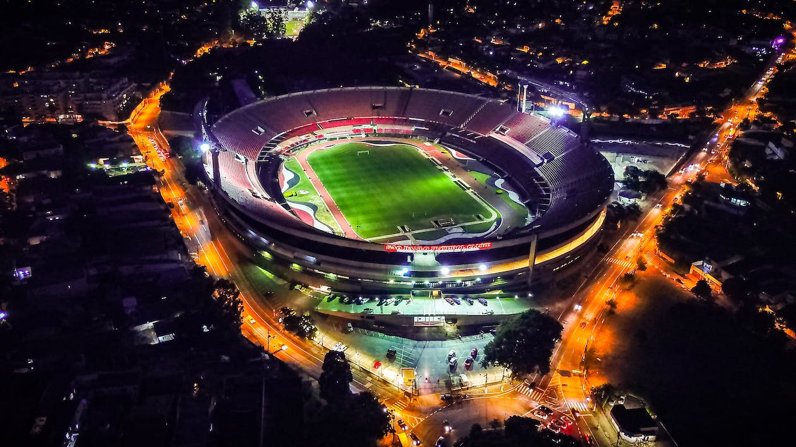

La coupe du monde qui se déroule cette année au Qatar est un événement regardé partout sur terre. Cette compétition mondiale a débuté le 20 novembre et se finira le 18 décembre prochain. Le Qatar est le tout premier pays musulman a accueillir sur ses terres un tournoi mondial. Cependant malgré l'enthousiasme de cet événement, elle fait l'objet de nombreuses polémiques.
On a tous déjà entendu parler, que ce soit à la télévision ou dans les journaux, du bilan humain provoqué par la construction des stades climatisés. Ces chiffres s'élèveraient à plus 6 500 décès d'ouvriers immigrés morts sur le sol qatari durant les constructions. Mais ce n'est pas tout, le "scandale" écologique des stades climatisés pose énormément de question quant aux futures conséquences environnementales qui promettent d'être désastreuses. Cela n'a pas de sens qu'un pays aussi petit avec des températures aussi extrêmes accueille un événement avec autant de monde durant une aussi courte période.
image d'illustration
Le Qatar représente tout l'inverse des valeurs du football, qui en principe est un sport d'égalité, de liberté et de rassemblement ; c'est-à-dire tout le contraire des valeurs qatariennes. Quand l'on sait que le Qatar ne respecte pas les droits des travailleurs, ainsi que ceux des femmes, que les membres LGBTQIA2+ sont persécutés ainsi que les minorités religieuses, on est en droit de s'interroger sur le déroulement de cet événement.
Lorsque vous allumerez votre télévision la coupe du monde, gardez en mémoire l'impact que ce tournoi a eu sur des milliers de vies et les conséquences qu'il aura par la suite.